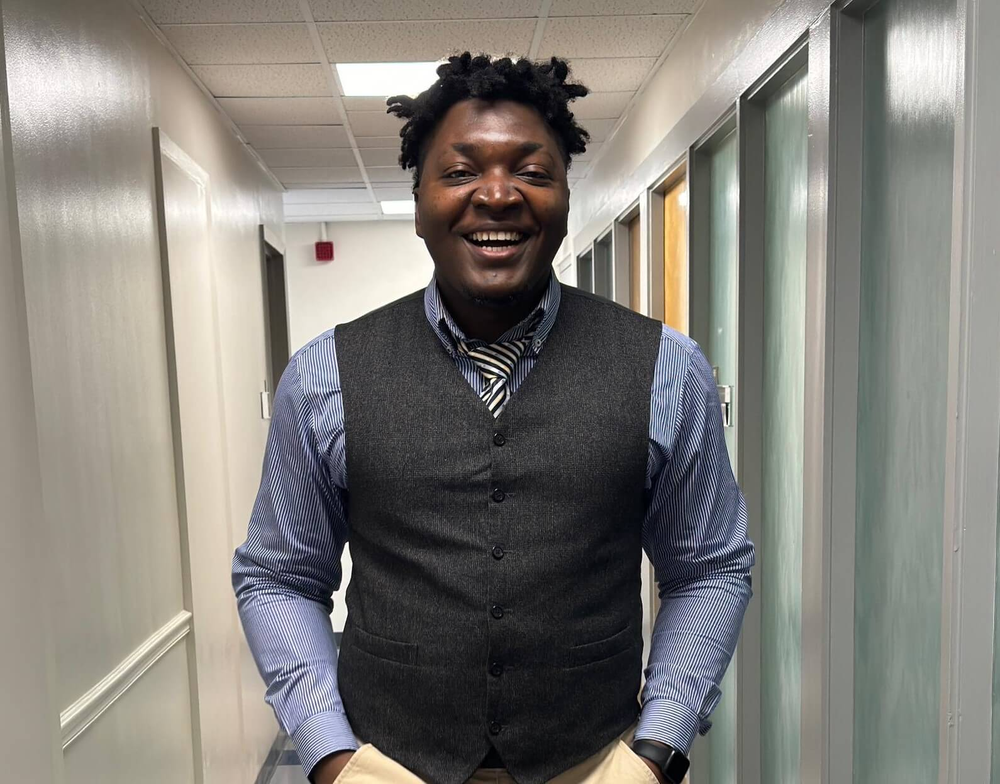

Chibuzor Okocha
Human-centered AI Researcher and AI Governance Expert
Chibuzor Okocha
Human-centered AI Researcher and AI Governance Expert
Awards and Honors
A list of awards and honors received by Dr. Chinasa T. Okolo.
Awards
- April 2024: Most Influential People of African Descent (MIPAD) Class of 2024 Global Top 100 Futurists and Innovators
- July 2023: Trailblazers in Engineering, Purdue University
- May 2023: Rising Stars in Management Science & Engineering, Stanford University
- January 2023: Bouchet Graduate Honor Society Scholar, Cornell University
- November 2022: Distinguished Leadership in Service Award, Cornell Bowers CIS
- May 2022: Community Outreach Award, Cornell Graduate School
- December 2021: 100 Brilliant Women in AI Ethics™
- October 2021: NextGen Professors Fellow, Cornell Graduate School
- May 2021: Grad Student of the Year, Cornell Diversity Programs in Engineering
- March 2020: blackcomputeHER Fellow, blackcomputeHER.org
- May 2019: Graduate Dean’s Scholar, Cornell University
- August 2018: LEAP Fellow, Diversifying LEAdership in the Professoriate Alliance
- May 2018: Bernard Charnwut Chan ‘88 Service Award, Pomona College
- May 2018: Bessie Reiner Dill Graduate Fellowship Award, Pomona College
- May 2018: Outstanding Senior in Leadership Award, The Claremont Colleges
- January 2016: EXROP Award, Howard Hughes Medical Institute
- April 2015: First Year Student Award, The Claremont Colleges
Scholarships, Fellowships, & Grants
- May 2023: ICICLE Educational Fellow, National Science Foundation
- October 2022: Provost Diversity Fellowship, Cornell Graduate School
- September 2022: LEAP Alliance Dissertation Fellowship, Google
- August 2022: Global Racial Justice Graduate Fellow, Mario Einaudi Center
- October 2019: Community-Engaged Student Travel Grant, Engaged Cornell
- August 2019: John Postel Scholar, North American Network Operators Group
- July 2019: UNCF Oracle Academy Fellow, Oracle Corporation
- April 2019: GEM Fellowship, The National GEM Consortium